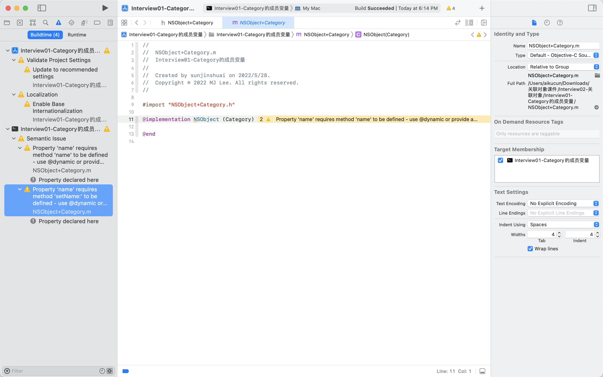
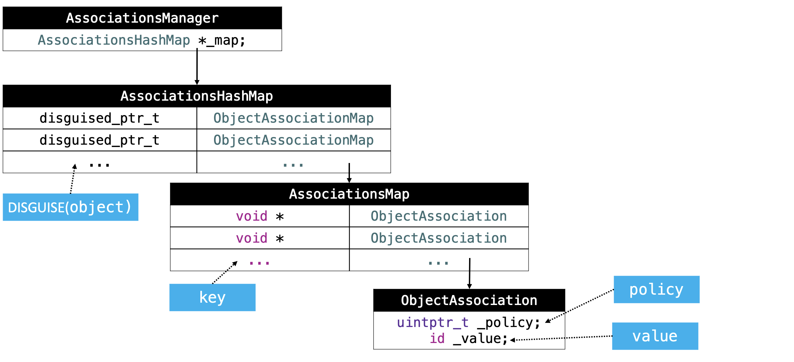

思考，如何给动态添加属性和方法？@property 给分类添加属性和方法；
@property 会做三件事：
生成实例变量 _property
生成 getter 方法 - property
生成 setter 方法 - setProperty:
创建一个 NSObject 的分类 Category，并添加一个属性 name。
1 2 3 4 5 6 7 8 9 10 11 12 13 @interface NSObject (Category) @property (nonatomic, copy) NSString *name; @end @implementation MJPerson (Test) - (void)setName:(NSString *)name { objc_setAssociatedObject(self, @selector(name), name, OBJC_ASSOCIATION_COPY_NONATOMIC); } - (NSString *)name { return objc_getAssociatedObject(self, @selector(name)); } @end

发现编译器报错了，
在这里的警告告诉我们 name 属性的存取方法需要自己手动去实现，或者使用 @dynamic 在运行时实现这些方法。 换句话说，分类中的 @property 并没有为我们生成实例变量以及存取方法，而需要我们手动实现。 @property 已经无法向固定的布局中添加新的实例变量。
Associated Object 关联对象是 Objective-C 2.0 运行时的一个特性，最早开始使用是在 OS X Snow Leopard 和 iOS 4 中。在 <objc/runtime.h> 中定义的三个方法，关联对象允许开发者对已经存在的类在扩展中添加自定义的属性，这几乎弥补了 Objective-C 最大的缺点；
1 2 3 4 5 6 7 8 9 10 11 12 13 14 15 16 17 18 19 20 21 22 23 24 25 26 27 28 29 30 31 32 33 34 35 36 37 38 39 40 41 42 43 44 45 46 47 48 49 50 51 52 53 54 55 56 57 58 59 60 61 62 63 64 65 66 67 /** * Sets an associated value for a given object using a given key and association policy. * 使用给定的键和关联策略为给定的对象设置关联的值。 * * @param object The source object for the association. * 关联的源对象 * * @param key The key for the association. * 关联的 key * @param value The value to associate with the key key for object. * Pass nil to clear an existing association. * 与对象的键相关联的值。传递 nil 以清除现有的关联。 * * @param policy The policy for the association. For possible values, see “Associative Object Behaviors.” * 关联策略 * * @see objc_setAssociatedObject * @see objc_removeAssociatedObjects */ OBJC_EXPORT void objc_setAssociatedObject(id _Nonnull object, const void * _Nonnull key, id _Nullable value, objc_AssociationPolicy policy) OBJC_AVAILABLE(10.6, 3.1, 9.0, 1.0, 2.0); /** * Returns the value associated with a given object for a given key. * 返回与给定键的给定对象关联的值 * * @param object The source object for the association. * 关联的源对象 * @param key The key for the association. * 关联的 key * * @return The value associated with the key \e key for \e object. * * @see objc_setAssociatedObject */ OBJC_EXPORT id _Nullable objc_getAssociatedObject(id _Nonnull object, const void * _Nonnull key) OBJC_AVAILABLE(10.6, 3.1, 9.0, 1.0, 2.0); /** * Removes all associations for a given object. * 删除给定对象的所有关联 * * @param object An object that maintains associated objects. * * @note The main purpose of this function is to make it easy to return an object * to a "pristine state”. You should not use this function for general removal of * associations from objects, since it also removes associations that other clients * may have added to the object. Typically you should use \c objc_setAssociatedObject * with a nil value to clear an association. * * 意指此函数会一下删除对象全部的关联对象，如果我们想要删除指定的关联对象， * 应该使用 objc_setAssociatedObject 函数把 value 参数传递 nil 即可。 * * 此功能的主要目的是使对象轻松返回“原始状态”，因此不应从该对象中普遍删除关联， * 因为它还会删除其他 clients 可能已添加到该对象的关联。 * 通常，您应该将 objc_setAssociatedObject 与 nil 一起使用以清除指定关联。 * * @see objc_setAssociatedObject * @see objc_getAssociatedObject */ OBJC_EXPORT void objc_removeAssociatedObjects(id _Nonnull object) OBJC_AVAILABLE(10.6, 3.1, 9.0, 1.0, 2.0);
const void *key：存取函数中的参数 key 我们都使用了 @selector(name)，其实也可以使用静态指针 static void * 类型的参数来代替，不过这里强烈建议使用 @selector(name) 作为 key 传入，因为这种方法省略了声明参数的代码，并且能很好地保证 key 的唯一性。关联对象存储在全局的统一的一个 AssociationsManager 中。
关联策略 1 2 3 4 5 6 7 typedef OBJC_ENUM(uintptr_t, objc_AssociationPolicy) { OBJC_ASSOCIATION_ASSIGN = 0, // 指定一个弱引用相关联的对象 OBJC_ASSOCIATION_RETAIN_NONATOMIC = 1, // 指定相关对象的强引用，非原子性 OBJC_ASSOCIATION_COPY_NONATOMIC = 3, // 指定相关的对象被复制，非原子性 OBJC_ASSOCIATION_RETAIN = 01401, // 指定相关对象的强引用，原子性 OBJC_ASSOCIATION_COPY = 01403 // 指定相关的对象被复制，原子性 };
objc_setAssociatedObject 1 2 3 4 5 6 7 8 9 10 11 12 13 14 15 16 17 18 19 20 21 22 23 24 25 26 27 28 29 30 31 32 33 34 35 36 37 38 39 40 41 42 43 44 45 46 47 48 49 50 51 52 53 54 55 56 57 58 59 60 61 62 63 64 65 66 67 68 69 70 71 void objc_setAssociatedObject(id object, const void *key, id value, objc_AssociationPolicy policy) { _object_set_associative_reference(object, (void *)key, value, policy); } void _object_set_associative_reference(id object, void *key, id value, uintptr_t policy) { // retain the new value (if any) outside the lock. // 创建一个ObjcAssociation对象 ObjcAssociation old_association(0, nil); // 通过policy为value创建对应属性，如果policy不存在，则默认为assign id new_value = value ? acquireValue(value, policy) : nil; { // 创建AssociationsManager对象 AssociationsManager manager; // 在manager取_map成员，其实是一个map类型的映射 AssociationsHashMap &associations(manager.associations()); // 创建指针指向即将拥有成员的Class // 至此该类已经包含这个关联对象 disguised_ptr_t disguised_object = DISGUISE(object); // 以下是记录强引用类型成员的过程 if (new_value) { // break any existing association. // 在即将拥有成员的Class中查找是否已经存在改关联属性 AssociationsHashMap::iterator i = associations.find(disguised_object); if (i != associations.end()) { // secondary table exists // 当存在时候，访问这个空间的map ObjectAssociationMap *refs = i->second; // 遍历其成员对应的key ObjectAssociationMap::iterator j = refs->find(key); if (j != refs->end()) { // 如果存在key，重新更改Key的指向到新关联属性 old_association = j->second; j->second = ObjcAssociation(policy, new_value); } else { // 否则以新的key创建一个关联 (*refs)[key] = ObjcAssociation(policy, new_value); } } else { // create the new association (first time). // key不存在的时候，直接创建关联 ObjectAssociationMap *refs = new ObjectAssociationMap; associations[disguised_object] = refs; (*refs)[key] = ObjcAssociation(policy, new_value); object->setHasAssociatedObjects(); } } else { // setting the association to nil breaks the association. // 这种情况是policy不存在或者为assign的时候 // 在即将拥有的Class中查找是否已经存在Class // 其实这里的意思就是如果之前有这个关联对象，并且是非assign形的，直接erase AssociationsHashMap::iterator i = associations.find(disguised_object); if (i != associations.end()) { // 如果有该类型成员检查是否有key ObjectAssociationMap *refs = i->second; ObjectAssociationMap::iterator j = refs->find(key); if (j != refs->end()) { // 如果有key，记录旧对象，释放 old_association = j->second; refs->erase(j); } } } } // release the old value (outside of the lock). // 如果存在旧对象，则将其释放 if (old_association.hasValue()) ReleaseValue()(old_association); }
函数执行过程中有两种情况：
value != nil 新增/更新关联对象的值；value == nil 删除一个关联对象；
初始化一个 AssociationsManager 对象，然后获取一个 AssociationsHashMap 哈希表，然后通过 DISGUISE 方法作为去哈希表查找的 key。这里的 DISGUISE 其实进行了按位取反的操作。
通过上一步按位取反之后的结果，在 AssociationsHashMap 哈希表中查询，这里是通过迭代器的方式进行查询，查询的结果是 ObjcAssociation 对象，这个结构也是一个哈希表，其内部存储的是 _object_set_associative_reference 方法传入的 key 为键，ObjcAssociation 对象为值的键值对。
如果没有查询到，说明之前在当前类上没有设置过关联对象。则需要初始化一个 ObjectAssociationMap 出来，然后通过 setHasAssociatedObjects 设置当前对象的 isa 的 has_assoc 属性为 true。
如果查询到了，说明之前在当前类上设置过关联对象，接着需要看 key 是否存在，如果 key 存在，那么就需要覆盖原有的关联对象 ；如果 key 不存在，则需要新增一个关联对象。
最后会判断 old_association 是否有值，如果有的话就释放掉，当然前提是旧的关联对象的策略是 OBJC_ASSOCIATION_SETTER_RETAIN。
objc_getAssociatedObject 1 2 3 4 5 6 7 8 9 10 11 12 13 14 15 16 17 18 19 20 21 22 23 24 25 26 27 28 id objc_getAssociatedObject_non_gc(id object, const void *key) { return _object_get_associative_reference(object, (void *)key); } id _object_get_associative_reference(id object, void *key) { id value = nil; uintptr_t policy = OBJC_ASSOCIATION_ASSIGN; { AssociationsManager manager; AssociationsHashMap &associations(manager.associations()); disguised_ptr_t disguised_object = DISGUISE(object); AssociationsHashMap::iterator i = associations.find(disguised_object); if (i != associations.end()) { ObjectAssociationMap *refs = i->second; ObjectAssociationMap::iterator j = refs->find(key); if (j != refs->end()) { ObjcAssociation &entry = j->second; value = entry.value(); policy = entry.policy(); if (policy & OBJC_ASSOCIATION_GETTER_RETAIN) ((id(*)(id, SEL))objc_msgSend)(value, SEL_retain); } } } if (value && (policy & OBJC_ASSOCIATION_GETTER_AUTORELEASE)) { ((id(*)(id, SEL))objc_msgSend)(value, SEL_autorelease); } return value; }
可以看到，跟 objc_setAssociatedObject 一样，objc_getAssociatedObject 这里又包裹了一层，其实现为 _object_get_associative_reference，而这个方法相比于上一节的 _object_set_associative_reference 要简单一些；
先初始化一个空的 value，以及一个策略为 OBJC_ASSOCIATION_ASSIGN 的 policy。
初始化一个 AssociationsManager 关联对象管理类。
然后以 DISGUISE(object) 按位取反之后的结果为键去查询 AssociationsHashMap。
如果在 AssociationsHashMap 中找到了，接着以 key 为键去 ObjectAssociationMap 中查询 ObjcAssociationObjectAssociationMap 中查询到了 ObjcAssociation，则把值和策略赋值给方法入口声明的两个临时变量，然后判断获取到的关联对象的策略是否为 OBJC_ASSOCIATION_GETTER_RETAIN，如果是的话，需要对关联值进行 retain 操作。
最后判断如果关联值是否存在且策略为 OBJC_ASSOCIATION_GETTER_AUTORELEASE，是的话就需要调用 objc_autorelease 来释放关联值。
最后返回关联值。
objc_removeAssociatedObjects 1 2 3 4 5 6 7 8 9 10 11 12 13 14 15 16 17 18 19 20 21 22 23 24 25 26 27 28 29 void objc_removeAssociatedObjects(id object) { if (object && object->hasAssociatedObjects()) { _object_remove_assocations(object); } } void _object_remove_assocations(id object) { vector< ObjcAssociation,ObjcAllocator<ObjcAssociation> > elements; { AssociationsManager manager; AssociationsHashMap &associations(manager.associations()); if (associations.size() == 0) return; disguised_ptr_t disguised_object = DISGUISE(object); AssociationsHashMap::iterator i = associations.find(disguised_object); if (i != associations.end()) { // copy all of the associations that need to be removed. ObjectAssociationMap *refs = i->second; for (ObjectAssociationMap::iterator j = refs->begin(), end = refs->end(); j != end; ++j) { elements.push_back(j->second); } // remove the secondary table. delete refs; associations.erase(i); } } // the calls to releaseValue() happen outside of the lock. for_each(elements.begin(), elements.end(), ReleaseValue()); }
objc_removeAssociatedObjects 方法我们平时可能用的不多，从字面含义来看，这个方法应该是用来删除关联对象。vector 中，然后对所有的 ObjcAssociation 对象调用 ReleaseValue() 方法，释放不再被需要的值。
关联对象原理 实现关联对象技术的核心对象有
AssociationsManager
AssociationsHashMap
ObjectAssociationMap
ObjcAssociation
AssociationsManager 1 2 3 4 5 6 7 8 9 10 11 12 13 class AssociationsManager { static spinlock_t _lock; static AssociationsHashMap *_map; // associative references: object pointer -> PtrPtrHashMap. public: AssociationsManager() { _lock.lock(); } ~AssociationsManager() { _lock.unlock(); } AssociationsHashMap &associations() { if (_map == NULL) _map = new AssociationsHashMap(); return *_map; } };
它维护了 spinlock_t 和 AssociationsHashMap 的单例，初始化它的时候会调用 lock.lock() 方法，在析构时会调用 lock.unlock()，而 associations 方法用于取得一个全局的 AssociationsHashMap 单例。
也就是说 AssociationsManager 通过持有一个自旋锁 spinlock_t 保证对 AssociationsHashMap 的操作是线程安全的，即每次只会有一个线程对 AssociationsHashMap 进行操作。
1 2 3 4 5 6 7 8 9 10 11 12 13 14 15 16 17 18 19 20 21 22 23 24 class AssociationsHashMap : public unordered_map<disguised_ptr_t, ObjectAssociationMap *, DisguisedPointerHash, DisguisedPointerEqual, AssociationsHashMapAllocator> { public: void *operator new(size_t n) { return ::malloc(n); } void operator delete(void *ptr) { ::free(ptr); } }; class ObjectAssociationMap : public std::map<void *, ObjcAssociation, ObjectPointerLess, ObjectAssociationMapAllocator> { public: void *operator new(size_t n) { return ::malloc(n); } void operator delete(void *ptr) { ::free(ptr); } }; class ObjcAssociation { uintptr_t _policy; id _value; public: ObjcAssociation(uintptr_t policy, id value) : _policy(policy), _value(value) {} ObjcAssociation() : _policy(0), _value(nil) {} uintptr_t policy() const { return _policy; } id value() const { return _value; } bool hasValue() { return _value != nil; } };
首先，AssociationsHashMap 用与保存从对象的 disguised_ptr_t 到 ObjectAssociationMap 的映射；ObjectAssociationMap 则保存了从 key 到关联对象 ObjcAssociation 的映射，这个数据结构保存了当前对象对应的所有关联对象；ObjcAssociation 包含了 policy 以及 value。而这两个值我们可以发现正是我们调用 objc_setAssociatedObject 函数传入的值，也就是说我们在调用 objc_setAssociatedObject 函数中传入的 value 和 policy 这两个值最终是存储在 ObjcAssociation 中的。

通过上图我们可以总结为：一个实例对象就对应一个 ObjectAssociationMap，而 ObjectAssociationMap 中存储着多个此实例对象的关联对象的 key 以及 ObjcAssociation，为 ObjcAssociation 中存储着关联对象的 value 和 policy 策略，关联对象由 AssociationsManager 管理并在 AssociationsHashMap 存储。
注意 如果 category 中的一个关联对象与 Class 中的某个成员同名，虽然 key 值不一定相同，自身的 Class 不一定相同，policy 也不一定相同，但是这样做会直接覆盖之前的成员，造成无法访问，但是其内部所有信息及数据全部存在。ViewController 做一个 Category，来创建一个叫做 view 的成员，我们会发现在运行工程的时候，模拟器直接黑屏。viewDidLoad 中下断点，甚至无法进入 debug 模式。因为 view 属性已经被覆盖，所以不会继续进行 viewController 的生命周期。Class 原来的属性，这会破坏 Class 原有的功能。